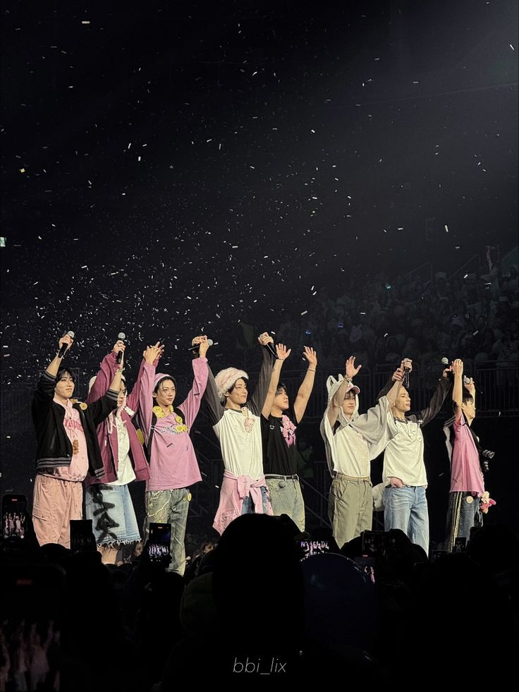
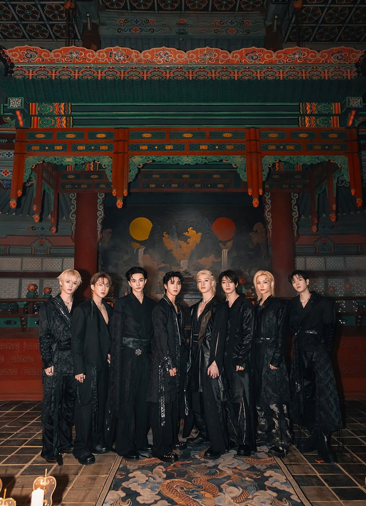
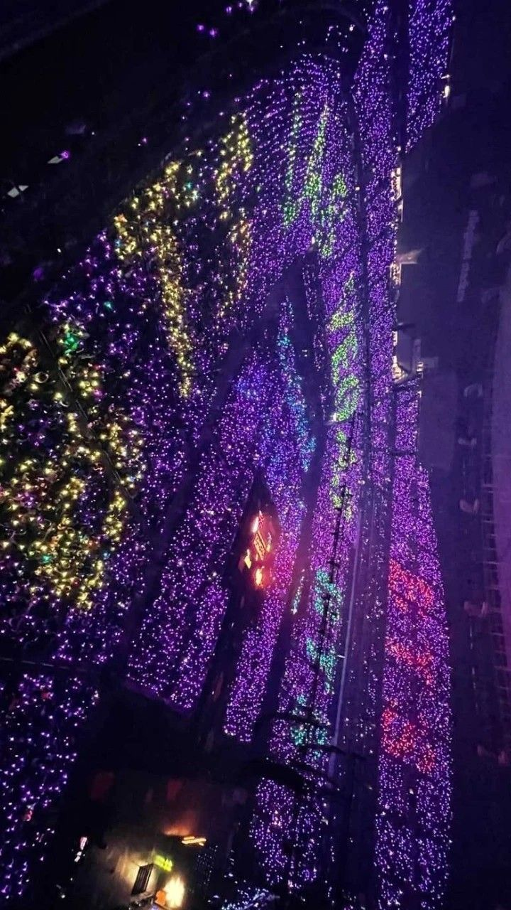

Inicio

El K-pop es un fenómeno musical global originado en Corea del Sur que combina música, moda, baile y cultura visual.
El K-pop es un fenómeno musical global originado en Corea del Sur que combina música, moda, baile y cultura visual.

Es un género musical que mezcla pop, hip-hop, R&B y electrónica, caracterizado por producciones visuales impactantes y coreografías precisas.

Algunos grupos famosos son BTS, BLACKPINK, EXO y TWICE, reconocidos mundialmente.

Imágenes representativas del estilo visual del K-pop.

El K-pop ha transformado la industria musical global gracias a su innovación, disciplina y conexión con el público.